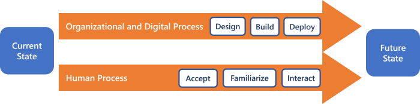
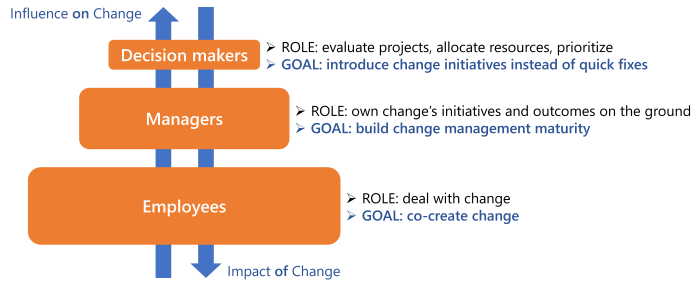
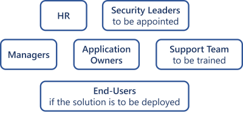

Plan Change Management
How to anticipate the deep changes in the organization's applications and processes due to Identity Manager installation as a new IGA tool.
Change management is not only part of any IGA project. It is a full project in itself that requires its own project officer, objectives, success indicators, etc. It starts on the very first day with the project kickoff, and runs alongside the technical project.
Overview
The applications and processes of the organization are about to change deeply. Change management is crucial because it determines the future proper use of the solution and the gain that can be achieved by the organization. It requires an upstream impact analysis in order to define the strategy to adopt.
Process
A digital project follows two parallel processes:
- The organizational and digital process used to design, build and deploy the solution.
- The human process urging staff to accept the solution, familiarize themselves with it, join and interact with the project.
Change management aims to support the teams throughout the human process.

These processes include mandatory steps that all staff members have to go through, but not necessarily at the same pace. For that reason, change managers can benefit from the use of personas, i.e. creating characters that represent key populations.
Participants and Artifacts

The aim of a Project Management Officer concerning critical stakeholders is to enable:
- Decision makers to trigger holistic change in response to recurring factors in daily issues. This can be translated into promoting efforts towards the broader enterprise strategy, focusing on recurring challenges, identifying common denominators, not exceeding Project Management Office's capacity and promoting PMO's shifting value proposition.
- Managers to grow maturity and confidence in change management because they allow responsibility distribution throughout the organization. They need support in self-assessment and change management at varying degrees according to the strategic importance and complexity level of change. This can be translated into DIY change supports like templates, change coaches for tailored guidance, or change drivers for end-to-end execution.
- The employees impacted by change to enter the decision-making process at an early stage, thus improving change absorption. They must be engaged as active participants in shaping change decisions, in order to avoid extreme leader-dictated or consensus-based strategies.
| Input | Output |
|---|---|
| Upstream impact analysis (required) |
Business ready to change |
Run Change Management for Identity Manager
In order to profitably handle change management, any project should start with the question: in three years from now, what will be the (three to five) main facts attesting the success of this project? The answer will shape the strategy.
Whether Identity Manager replaces manual processes or an existing IGA tool, change management methods are going to be the same. Only the analysis of impacted populations and the effort made to onboard them can define the appropriate response.
IGA impact is based on data quality. Therefore, change management must encompass everything and everyone that consumes and/or feeds data. All three population segments (decision makers, managers and employees) are involved in data quality in one way or another. Hence, it is essential that they understand IGA as an advantage instead of a constraint.
Run change management by proceeding as follows:
-
Identify the populations impacted by change. Below is an example of impacted populations that can vary enormously.

-
For all listed populations, estimate their size and the expected impact on them, through indicators like the frequency of their future use of the solution. Use personas to represent key population members, such as VIP users that don't use the application much, or users not feeling comfortable with computers.
-
According to the previous impact analysis, implement adjusted change management methods. You can get inspiration from the following examples.
| Population | Size | Impact | Possible Actions | |
|---|---|---|---|---|
| 1 | All | 500 | Low | Introduction email Public video Information article |
| 2 | End-Users | 50 | High | Coffee corner: coffee break with the local support team offering tutorials and exercises on Identity Manager |
| 3a | HR/Managers | 10 | High (daily use) |
Tutorials and exercises with a support team to get started quickly with Identity Manager |
| 3b | HR/Managers | 10 | Medium (bimonthly use) |
Step-by-step procedure video or flyer |
Example 1
Informing relevant populations is essential. For large populations (ex.: 500 employees), an introduction email can be sent to everyone or a video published on a public website or played on screens visible in the workplace.
Example 2
A medium or large population (i.e. the size of a department in your organization) might be receptive to informal meetings such as a coffee break with the local support team offering tutorials and exercises on Identity Manager.
Example 3
Let us consider HR teams and managers which have a change impact depending on their frequency of use of the application.
Example 3a
If they frequently use the application (i.e. daily use), they will benefit from tutorials and exercises with a support team to get started quickly with Identity Manager.
Example 3b
If they infrequently use the application (i.e. bimonthly use), they may rather benefit from training materials such as a step-by-step procedure video or flyer.
Verify Change Management
In order to verify the process, change managers can rely on implemented indicators, in the same way as for any project management situation.